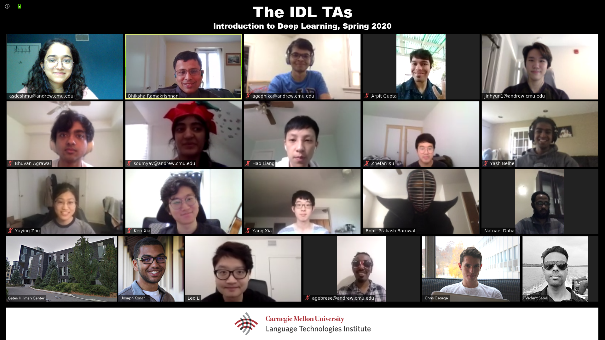

Hall of Fame
11-785/485 Intro to DL is a very demanding course. As much as it places demands on the students, it places far greater demands on the teaching assistants, who work very hard, often pulling long weekend hours, just to ensure that the students get the most out of the course. They hold endless office hours, answer (on average) over 30 piazza questions a day, conduct recitations, help design quizzes, design and monitor homeworks, provide endless and tireless help to ensure students are able to complete them, mentor projects, read and grade dozens of project proposals, midterm reports and final reports, conduct final project evaluations, and finally help with the grading and assessments.
The course has been tremendously successful, and is currently being followed by many universities around the US and the world. The success is entirely attributable to my TAs, without whose tremendous work nothing would happen. They are the real heroes of this effort.
I cannot thank them enough for everything they did and continue to do, but I can acknowledge them by name, for everyone who ever visits this page to see.
Below is a list of the TAs who have worked on the course over the various semesters. Thank you all.
Fall 2016
- Haohan Wang (haohanw@andrew.cmu.edu)
- Haoqi Fan (haoqif@andrew.cmu.edu)
Spring 2017
- Muhammad Ahmed Shah (mshah1@andrew.cmu.edu)
Fall 2017
- Daniel Schwartz (drschar@andrew.cmu.edu)
- Alexander Litzenberger (alitzenb@andrew.cmu.edu)
Spring 2018
- Benjamin Striner (bstriner@andrew.cmu.edu)
- Jerry Ding (dalud@andrew.cmu.edu)
- Rajat Kulshreshta (rkulshre@andrew.cmu.edu)
- Thomas Manzini (tmanzini@andrew.cmu.edu)
- Ryan Brigeden (rbrigden@andrew.cmu.edu)
- Mounira Tlili for Doha (mst@andrew.cmu.edu)
- Aggrey Muhebwa for Kigali (amuhebwa@andrew.cmu.edu)
Fall 2018
- Ryan Brigden (rbrigden@andrew.cmu.edu)
- Raphael Franck Olivier (rolivier@andrew.cmu.edu)
- Sai Nihar Tadichetty (ntadiche@andrew.cmu.edu)
- Shubham Tripathi (shubhamt@andrew.cmu.edu)
- Soham Ghosh (sohamg@andrew.cmu.edu)
- Madhura Das (madhurad@andrew.cmu.edu)
- Ipsita Prakash (iprakash@andrew.cmu.edu)
- Dhruv Shah (ddshah@andrew.cmu.edu)
- Shaden Shaar (sshaar@andrew.cmu.edu)
- David Zhang (davidz1@andrew.cmu.edu)
- Zeqiang Huang (zqeiangh@andrew.cmu.edu)
- Anushree Prasanna Kumar (apkumar@andrew.cmu.edu)
- Omar Khattab for Doha (okhattab@cmu.edu)
- Nebiyou Yismaw for Kigali (nyismaw@andrew.cmu.edu)
Spring 2019
- Alex Litzenberger : alitzenb@andrew
- Chia-wei Chang (for SV): chiaweic@andrew
- Cody Smith (for SV): codys@andrew
- David Bick : dbick@andrew
- Hengrui Liu (for SV): hengrui2@andrew
- Hira Dhamyal : hyd@andrew
- Jakob Cassiman (for SV): jcassima@andrew
- Josh Movenzadeh : jmoavenz@andrew
- Kai Hu : kaihu@andrew
- Mir Mohammed Daanish Ali Khan : malikhan@andrew
- Oluawefmi Azeez (for Kigali): oazeez@andrew
- Raphael Olivier : rolivier@andrew
- Sarveshwaran Dhanasekar : sarveshd@andrew
- Shaden Shaar (for Doha): sshaar@andrew
- Simral Chaudhary : simralc@andrew
- William Hu : haoqih@andrew
Fall 2019
- Aishwarya Reganti: areganti@andrew.cmu.edu
- Amit Chahar: achahar@andrew.cmu.edu
- Ethan Xuanyue Yang: xuanyuey@andrew.cmu.edu
- Hanna Moazam: hmoazam@andrew.cmu.edu
- Hariharan Muralidharan: hmuralid@andrew.cmu.edu
- Kangrui Ruan (Darren): kangruir@andrew.cmu.edu
- Liwei Cai: liweicai@andrew.cmu.edu
- Pallavi Sharma: psharma2@andrew.cmu.edu
- Parth Shah: pvshah@andrew.cmu.edu
- Wendy Ebanks: wvelasqu@andrew.cmu.edu
- (Kigali) Aime Musangamfura: amusanga@andrew.cmu.edu
- (Kigali) Natnael Daba: ndaba@andrew.cmu.edu
- (Silicon Valley) Bonan Jin: bonanj@andrew.cmu.edu
- (Silicon Valley) Joseph Konan: jkonan@andrew.cmu.edu
pix with hoodies (In hoodie picture, from left, back row: Joseph, Nat, Parth, Ethan, Hari, Kangrui, Amit, Bonan, Liwei. Front row: Wendy, Hanna, Aishwarya, Pallavi).
Spring 2020
- Advait Gadhikar: agadhika@andrew.cmu.edu
- Amala Sanjay Deshmukh: asdeshmu@andrew.cmu.edu
- Bhuvan Agrawal: bhuvana@andrew.cmu.edu
- Christopher George: cmgeorge@andrew.cmu.edu
- David Park: jinhyun1@andrew.cmu.edu
- Hao Liang: hliang2@andrew.cmu.edu
- Jianfeng (Ken) Xia: jianfenx@andrew.cmu.edu
- Rohit Prakash Barnwal: rohitprb@andrew.cmu.edu
- Soumya Vadlamannati: soumyav@andrew.cmu.edu
- Vedant Sanil: vsanil@andrew.cmu.edu
- Yang Xia: yangxia2@andrew.cmu.edu
- Yash Belhe: ybelhequ@andrew.cmu.edu
- Yuying Zhu: yuyingz@andrew.cmu.edu
- Zhefan Xu: zhefanx@andrew.cmu.edu
- (Kigali) Abrham Gebreselasie: agebrese@andrew.cmu.edu
- (Kigali) Natnael Daba: ndaba@andrew.cmu.edu
- (Silicon Valley) Arpit Gupta: arpitgup@andrew.cmu.edu
- (Silicon Valley) Joseph Konan: jkonan@andrew.cmu.edu
- (Silicon Valley) Leo Chenghui Li: chenghui@andrew.cmu.edu

From left to right, then top to bottom: Amala, Bhiksha, Advait, David, Bhuvan, Soumya, Hao, Zhefan, Yash, Yuying, Ken, Yang, Rohit, Natnael, Joseph, Leo, Leo, Abrham, Christopher, Vedant.
Fall 2020
- Aiswarya Vinod Kumar: avinodku@andrew.cmu.edu
- Akshat Gupta: akshatgu@andrew.cmu.edu
- Antioch Sanders: asanders@andrew.cmu.edu
- Anxiang Zhang: anxiangz@andrew.cmu.edu
- Bharat Gaind: bgaind@andrew.cmu.edu
- David Park: jinyun1@andrew.cmu.edu
- Faris Alotibi: alotibifo@gmail.com
- Jacob Lee: jcob@cmu.edu
- Jiachen Lian: jlian2@andrew.cmu.edu
- Kushal Saharan: ksaharan@andrew.cmu.edu
- Mansi Anand: mansia@andrew.cmu.edu
- Miao Wang: miaow@andrew.cmu.edu
- Nicole Miya Sylvester: nsylvest@andrew.cmu.edu
- Reshmi Ghosh: reshmig@andrew.cmu.edu
- Sean Pereira: sapereir@andrew.cmu.edu
- Tony Qin: tcq@andrew.cmu.edu
- (Kigali) Abrham Gebresellasie: agebrese@andrew.cmu.edu
- (Kigali) Samuel Ishimwe: samuelmbaraga@gmail.com
- (Silicon Valley) Jingwei Zhang: jzhang5@andrew.cmu.edu
- (Silicon Valley) Joseph Konan: jkonan@andrew.cmu.edu
- (Silicon Valley) Yizhuo Zhang: yizhuoz@andrew.cmu.edu